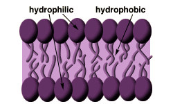

Kidneys and Metals Problem Set
Problem 7: Membranes and metals
For help to answer the question:
Amino acids are filtered out of the blood in the glomerulus of the kidney, but amino acids are not a waste product. The body needs the amino acids, so they are reabsorbed from the filtrate back into the tubule cells of the kidney. After the amino acids are concentrated in the tubule cells they must be transported back into blood. What type of transport is used to move the amino acids from the filtrate to the inside of the kidney cells?
A. passive diffusion B. protein channels C. active transport
Tutorial
Membranes in the kidneysAmino acids are one of several products that are filtered out of the blood in the glomerulus, but are not waste products, and so need to be reabsorbed in the tubule. The process of reabsorption means that the substance must be moved across one membrane to get into the tubule, then across another membrane to move from the tubule into the blood.
Membranes
|
 Membranes in humans consist of a phospholipid bilayer. The head group of a phospholipid is hydrophilic (water-like) and the chains are lipophilic (fat-like). As you know, oil and water don't mix, so the phospholipids are arranged in two layers that allow the membrane to serve as a barrier separating two water like environments. |
Membrane Transport
|
The structure of a phospholipid bilayer makes membranes a very effective barrier, so it difficult for most substances to cross a membrane. There are several mechanisms that cells use to move chemicals across the cell membrane.
Facilitated diffusion
Passive diffusion
Active transport
For example, in the filtrate of the kidneys, amino acids are in a low concentration and need to be moved into the tubules where the concentration can be quite high already. There are special proteins that move both sodium and amino acids at the same time. The movement of sodium from high to low concentration provides the energy to move the amino acids from low to high concentration. After the amino acids are moved into the tubules via active transport, the amino acids need to move out of the tubules into the blood. In the tubules, amino acids are in high concentration and in the blood they are at low concentrations. Movement from the tubules to the blood occurs via facilitated diffusion.
|


The Biology Project
The University of Arizona
Monday, February 22, 1999
Contact the Development Team
http://biology.arizona.edu
All contents copyright © 1999. All rights reserved.